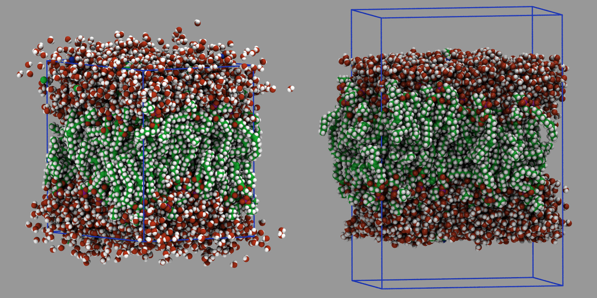

\(\renewcommand{\AA}{\text{Å}}\)
10.2.9. Convert bulk system to slab
A regularly encountered simulation problem is how to convert a bulk system that has been run for a while to equilibrate into a slab system with some vacuum space and free surfaces. The challenge here is that one cannot just change the box dimensions with the change_box command or edit the box boundaries in a data file because some atoms will have non-zero image flags from diffusing around.
Changing the box dimensions results in an undesired displacement of those atoms, since the image flags indicate how many times the box length in x-, y-, or z-direction needs to be added or subtracted to get the “unwrapped” coordinates. By changing the box dimension this distance is changed and thus those atoms move unphysically relative to their neighbors with zero image flags. Setting image flags forcibly to zero creates problems because that could break apart molecules by having one atom of a bond on the top of the system and the other at the bottom.

Snapshots of the bulk Rhodopsin in lipid layer and water system (right) and the generated slab geometry (left)
Disclaimer
The following workflow will work for many bulk systems, but not all. Some systems cannot be converted (e.g. polymers with bonds to the same molecule across periodic boundaries, sometimes called “infinite polymers”). The amount of vacuum that needs to be added depends on the length of the molecules where the system is split (the example here splits where there is water with short molecules). In some cases, the system may need to be re-centered in the box first using the displace_atoms command. Also, the time spent on strong thermalization and equilibration will depend on the specific system and its thermodynamic conditions.
Below is a suggested workflow using the Rhodopsin benchmark input for demonstration. The figure shows the state before
the procedure on the left (with unwrapped atoms that have diffused out
of the box) and after on the right (with the vacuum added above and
below). The procedure is implemented by modifying a copy of the
in.rhodo input file. The first lines up to and including the
read_data command remain unchanged. Then we insert
the following lines to add vacuum to the z direction above and below the
system:
variable delta index 10.0
reset_atoms image all
write_dump all custom rhodo-unwrap.lammpstrj id xu yu zu
change_box all z final $(zlo-2.0*v_delta) $(zhi+2.0*v_delta) &
boundary p p f
read_dump rhodo-unwrap.lammpstrj 0 x y z box no replace yes
kspace_modify slab auto
Specifically, the variable delta (set to 10.0) represents a distance that determines the amount of vacuum added: we add twice its value in each direction to the z-dimension; thus in total \(40 \AA\) get added. The reset_atoms image all command shall reset any image flags to become either 0 or \(\pm 1\) and thus have the minimum distance from the center of the simulation box, but the correct relative distance for bonded atoms.
Using kspace_modify slab auto lets the solver choose the near-optimal
virtual vacuum used by the reciprocal-space slab correction from the
current long-range accuracy target and box geometry. A fixed value such
as slab 3.0 can still be used if a manual override is preferred.
The write_dump command then writes out the resulting unwrapped coordinates of the system. After expanding the box, coordinates that were outside the box should now be inside and the unwrapped coordinates will become “wrapped”, while atoms outside the periodic boundaries will be wrapped back into the box and their image flags in those directions restored.
The change_box command adds the desired distance to the low and high box boundary in z-direction and then changes the boundary to “p p f” which will force the image flags in z-direction to zero and create an undesired displacement for the atoms with non-zero image flags.
With the read_dump command we read back and replace partially incorrect coordinates with the previously saved, unwrapped coordinates. It is important to ignore the box dimensions stored in the dump file. We want to preserve the expanded box. Finally, we turn on the slab correction for the PPPM long-range solver with the kspace_modify command as required when using a long range Coulomb solver for non-periodic z-dimension.
Next we replace the fix npt command with:
fix 2 nvt temp 300.0 300.0 10.0
We now have an open system and thus the adjustment of the cell in z-direction is no longer required. Since splitting the bulk water region where the vacuum is inserted, creates surface atoms with high potential energy, we reduce the thermostat time constant from 100.0 to 10.0 to remove excess kinetic energy resulting from that change faster.
Also the high potential energy of the surface atoms can cause that some of them are ejected from the slab. In order to suppress that, we add soft harmonic walls to push back any atoms that want to leave the slab. To determine the position of the wall, we first need to determine the extent of the atoms in z-direction and then place the harmonic walls based on that information:
compute zmin all reduce min z
compute zmax all reduce max z
thermo_style custom zlo c_zmin zhi c_zmax
run 0 post no
fix 3 all wall/harmonic zhi $(c_zmax+v_delta) 10.0 0.0 ${delta} &
zlo $(c_zmin-v_delta) 10.0 0.0 ${delta}
The two compute reduce command determine the minimum and maximum z-coordinate across all atoms. In order to trigger the execution of the compute commands we need to “consume” them. This is done with the thermo_style custom command followed by the run 0 command. This avoids and error accessing the min/max values determined by the compute commands to compute the location of the wall in lower and upper direction. This uses the previously defined delta variable to determine the distance of the wall from the extent of the system and the cutoff for the wall interaction. This way only atoms that move beyond the min/max values in z-direction will experience a restoring force, nudging them back to the slab. The force constant of \(10.0 \frac{\mathrm{kcal/mol}}{\AA}\) was determined empirically.
Adding these “restoring” soft walls assists in making the free surfaces above and below the slab flat, instead of having rugged or undulated surfaces. The impact of the walls can be changed by adjusting the force constant, cutoff, and position of the wall.
Finally, we replace the run 100 of the original input with:
run 1000 post no
unfix 3
fix 2 all nvt temp 300.0 300.0 100.0
run 1000 post no
write_data data.rhodo-slab
This runs the system converted to a slab first for 1000 MD steps using
the walls and stronger Nose-Hoover thermostat. Then the walls are
removed with unfix 3 and the thermostat time constant
reset to 100.0 and the system run for another 1000 steps. Finally the
resulting slab geometry is written to a new data file
data.rhodo-slab with a write_data command. The
number of MD steps required to reach a proper equilibrium state is very
likely larger. The number of 1000 steps (corresponding to 2
picoseconds) was chosen for demonstration purposes, so that the
procedure can be easily and quickly tested.